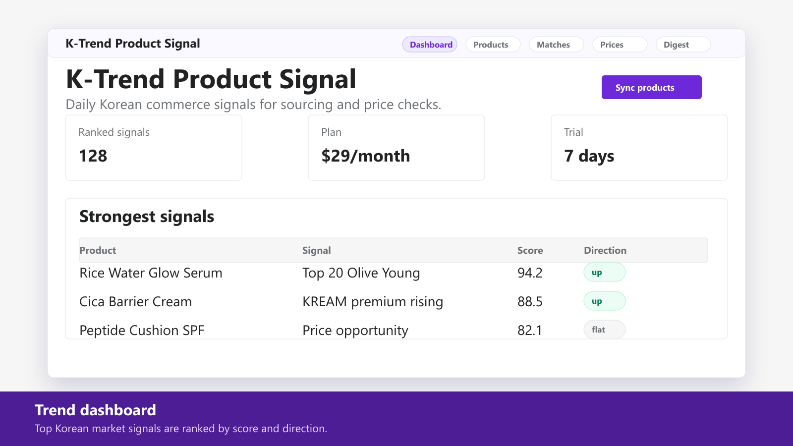
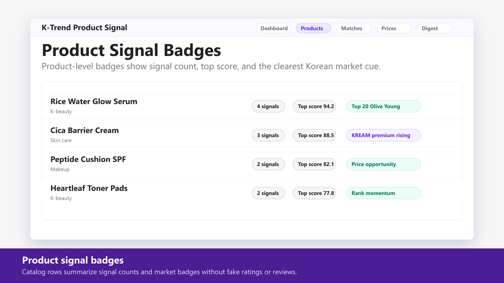
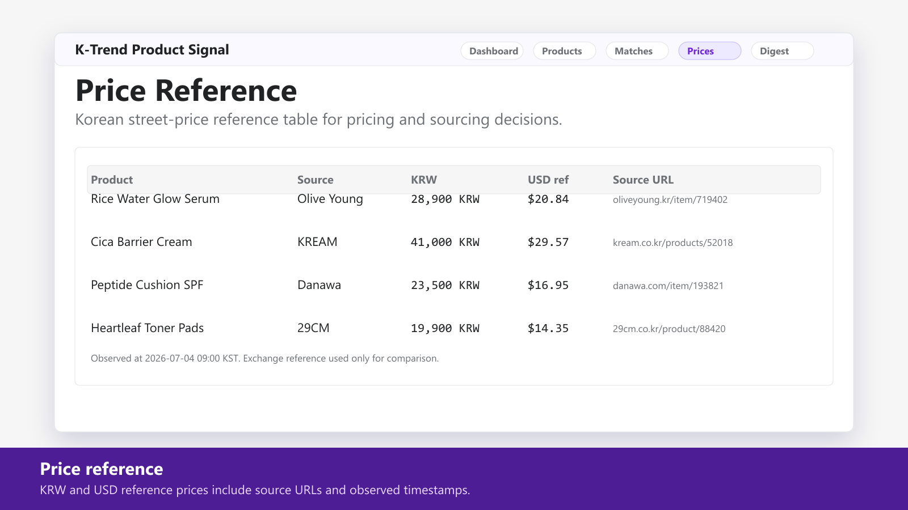
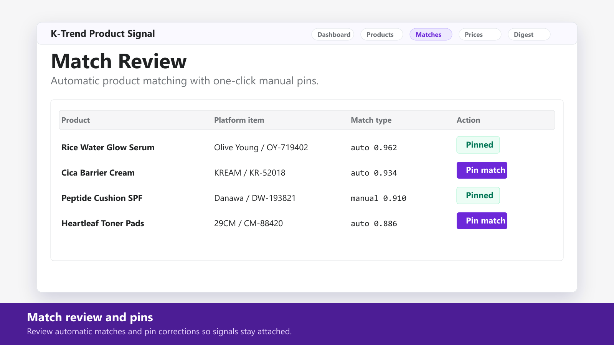
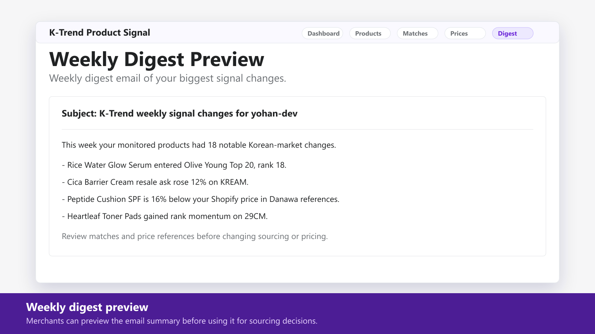

$29/month · 7-day free trial
K-Trend Product Signal
Korean market trend and price signals for your products
K-Trend maps your catalog to public Korean commerce signals from Olive Young, Musinsa, 29CM, KREAM, and Danawa. It shows product-level badges, a KRW and USD price reference table, and a weekly digest of what changed. Products are matched automatically, and merchants can pin corrections once so signals stay attached.
Coming to the Shopify App StoreWhat it does
- Daily trend signals from Olive Young, Musinsa, 29CM, KREAM, and Danawa
- Product-level badges for rank momentum, resale premium, and price opportunities
- Korean street-price reference table for pricing and sourcing decisions
- Automatic product matching with one-click manual pins
- Weekly digest email of the biggest signal changes
Pricing
$29/month
7-day free trial. One focused plan for the features listed here.
Screenshots





FAQ
Does K-Trend change my prices or products?
No. It is an analytics app. It reads products and shows signals; it does not automate pricing or product edits.
What catalog data does it use?
It uses product fields such as title, vendor, tags, SKU, barcode, price, currency, and image URL to match products to public Korean market observations.
Can I correct a bad automatic match?
Yes. The app includes one-click manual pins so a merchant can attach a Shopify product to the intended platform item.
Are the Korean signals private data?
The signal feed is built from public Korean commerce pages collected by Yohan Labs infrastructure; source URLs and timestamps are shown per data point.
Coming to the Shopify App Store
The store link will be added after app review approval.